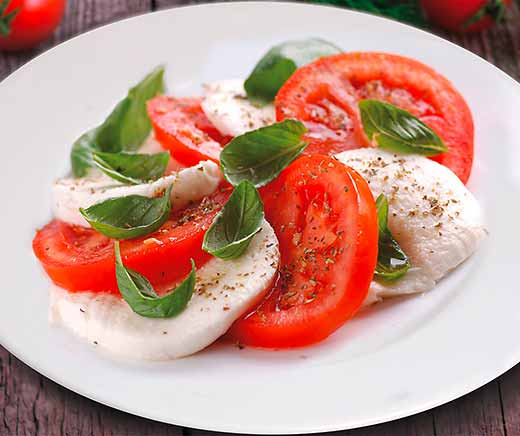

Tomato & Mozzarella Salad

Homemade and fresh tomato & mozrella salad
Tomato and mozzarella salad served with fresh basil and drizzled with olive oil... There's nothing better!
A perfect salad alternative, especially in summer when you can get tomatoes and basil from the garden.
Ingredients:
- Tomatoes
- Mozzarella
- Basil
- Olive oil
- Salt & Pepper
Steps:
- Cut thin slices of tomatoes
- Cut slices of mozzarella as thin as tomatoes
- Spread first slice of tomato, then mozzarella etc
- add salt & pepper
- Pour olive oil, add fex leaves of basil on top and voila!!!